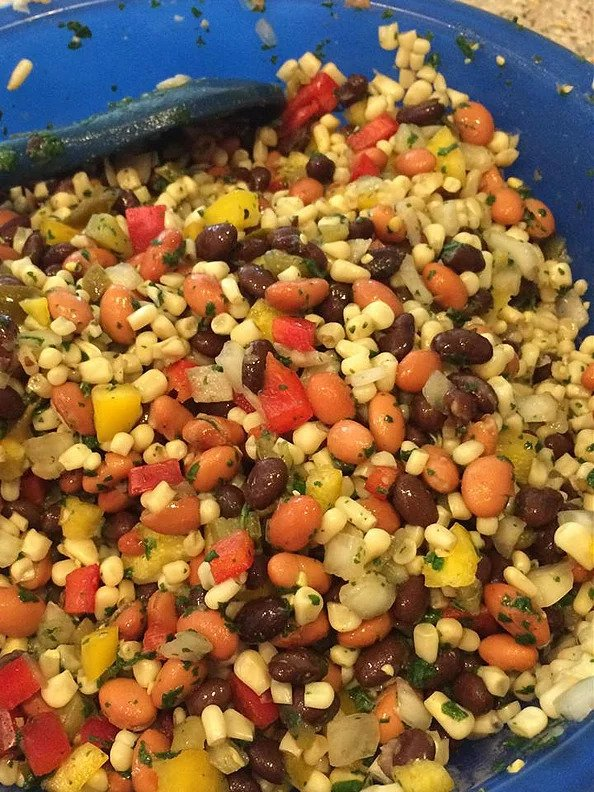

Texas Caviar

This is a yummy Texas caviar made with black beans and pinto beans instead of black-eyed peas. Serve with scoop-style tortilla chips as a great party appetizer.
Ingredients :
- 2 (15 ounce) cans black beans, rinsed and drained
- 2 (15 ounce) cans pinto beans, rinsed and drained
- 2 (15 ounce) cans white corn, rinsed and drained
- 1 (4 ounce) can chopped green chiles, undrained
- 1 jalapeno chile pepper, seeded and finely chopped (Optional)
- 1 red bell pepper - cored, seeded and finely chopped
- 1 green bell pepper - cored, seeded and finely chopped
- ½ cup olive oil
- ½ cup rice vinegar
- ⅓ cup white sugar
- ½ teaspoon garlic powder
Steps :
- Mix the black beans, pinto beans, white corn, green chiles, jalapeno pepper, red and green bell peppers, red onion, and cilantro together in a large bowl.
- To make the dressing, stir the rice vinegar, olive oil, sugar, and garlic powder together in a pan. Bring to a boil, then remove from heat, and cool. Pour dressing over bean mixture, and toss to mix evenly.